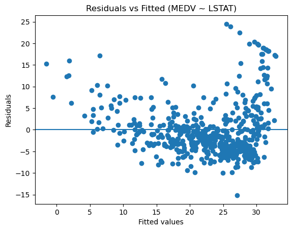

11장 보스턴 주택 가격 분석#
1. 데이터 업로드#

ChatGPT 설명#
1. 데이터셋 개요#
이 데이터는 1970년대 미국 매사추세츠 주 Boston 지역의 여러 행정 구역(횡단면 단위)에 대한 주택 가격과 사회·경제적 특성을 담고 있다. 각 행은 하나의 지역을 나타내며, 열은 해당 지역의 특성(설명 변수) 또는 주택 가격(반응 변수)을 의미한다. 회귀 분석(regression analysis) 예제로 가장 널리 사용된 고전 데이터셋 중 하나다.
관측 단위: 보스턴 내 지역 (횡단면 데이터)
관측 수: 506
설명 변수 수: 13
반응 변수: 1 (주택 가격)
2. 변수 구성#
변수명 |
의미 |
유형 |
|---|---|---|
CRIM |
지역 범죄율 |
연속형 |
ZN |
25,000 sq.ft 이상 대형 주택 비율 |
연속형 |
INDUS |
비소매 상업지역 면적 비율 |
연속형 |
CHAS |
찰스강 인접 여부 (1=인접) |
이진형 |
NOX |
일산화질소 농도 |
연속형 |
RM |
주택당 평균 방 개수 |
연속형 |
AGE |
1940년 이전 건축 주택 비율 |
연속형 |
DIS |
고용 중심지까지 가중 거리 |
연속형 |
RAD |
방사형 고속도로 접근성 지수 |
연속형 |
TAX |
재산세율 |
연속형 |
PTRATIO |
학생/교사 비율 |
연속형 |
B |
흑인 인구 비율 기반 지수 (역사적 변수) |
연속형 |
LSTAT |
저소득층 인구 비율 (%) |
연속형 |
MEDV |
주택 가격 중앙값 (단위: $1000) |
반응 변수 |
3. 분석적 관점에서의 해석#
이 데이터는 전형적인 다중 선형회귀 모형
을 설명하기에 적합한 구조를 가진다.
\(Y\) =
MEDV(주택 가격)\(X\) = 지역 특성 벡터
\(\beta\) = 각 특성이 가격에 미치는 한계 효과
\(\epsilon\) = 설명되지 않는 오차
즉, 이 데이터는 주택 가격의 결정요인을 추정하는 문제로 해석할 수 있다.
4. 데이터의 특징#
횡단면 데이터 시간 변화가 아니라 지역 간 차이를 분석한다.
연속형 + 이산형 변수 혼합 회귀 모형에서 더미 변수 처리 예제를 다루기 좋다 (
CHAS).다중공선성 가능성
RAD,TAX,INDUS등은 서로 높은 상관을 가질 수 있어 회귀 진단 예제로 적합하다.비선형 관계 존재 가능
LSTAT와MEDV는 선형보다 곡선 관계에 가까워 모형 확장의 필요성을 보여준다.사회경제 데이터 특성 단순 물리적 특성뿐 아니라 사회적 요인도 가격 결정에 영향을 준다.
5. 요약#
이 데이터셋은
회귀 모형의 구조 이해
모형 가정 진단
예측과 인과 해석의 차이 설명 을 위한 교육용 데이터로 매우 적합하다.
즉, 이 데이터는 단순한 가격 예측을 넘어서 통계적 추론과 계량모형 해석을 연습하는 교재용 표준 사례로 볼 수 있다.
다음 단계로
기초 통계량 요약
변수 간 상관관계
산점도 행렬 중 무엇부터 진행할까?
2. 기초 통계량, 상관관계, 산점도 행렬#
ChatGPT 설명#
1. 기초 통계량 요약#
표는 각 변수의 분포를 한 번에 훑기 위한 출발점이다. 평균과 표준편차는 중심과 산포를, 사분위수는 비대칭과 이상치 가능성을 빠르게 보여준다.
변수 |
개수 |
평균 |
표준편차 |
최솟값 |
1사분위수(25%) |
중앙값(50%) |
3사분위수(75%) |
최댓값 |
|---|---|---|---|---|---|---|---|---|
CRIM |
506 |
3.614 |
8.602 |
0.006 |
0.082 |
0.257 |
3.677 |
88.976 |
ZN |
506 |
11.364 |
23.322 |
0.000 |
0.000 |
0.000 |
12.500 |
100.000 |
INDUS |
506 |
11.137 |
6.860 |
0.460 |
5.190 |
9.690 |
18.100 |
27.740 |
CHAS |
506 |
0.069 |
0.254 |
0.000 |
0.000 |
0.000 |
0.000 |
1.000 |
NOX |
506 |
0.555 |
0.116 |
0.385 |
0.449 |
0.538 |
0.624 |
0.871 |
RM |
506 |
6.285 |
0.703 |
3.561 |
5.885 |
6.208 |
6.623 |
8.780 |
AGE |
506 |
68.575 |
28.149 |
2.900 |
45.025 |
77.500 |
94.075 |
100.000 |
DIS |
506 |
3.795 |
2.106 |
1.130 |
2.100 |
3.207 |
5.188 |
12.127 |
RAD |
506 |
9.549 |
8.707 |
1.000 |
4.000 |
5.000 |
24.000 |
24.000 |
TAX |
506 |
408.237 |
168.537 |
187.000 |
279.000 |
330.000 |
666.000 |
711.000 |
PTRATIO |
506 |
18.456 |
2.165 |
12.600 |
17.400 |
19.050 |
20.200 |
22.000 |
B |
506 |
356.674 |
91.295 |
0.320 |
375.377 |
391.440 |
396.225 |
396.900 |
LSTAT |
506 |
12.653 |
7.141 |
1.730 |
6.950 |
11.360 |
16.955 |
37.970 |
MEDV |
506 |
22.533 |
9.197 |
5.000 |
17.025 |
21.200 |
25.000 |
50.000 |
읽는 포인트#
CHAS는 0/1의 이진 변수라 평균 0.069는 1의 비율(약 6.9%)로 해석된다.
CRIM은 최댓값이 평균 대비 매우 커서 오른쪽 꼬리가 긴 분포(강한 양의 비대칭) 가능성이 높다.
MEDV는 최댓값이 50으로 ‘상한’처럼 보인다. 회귀에서 종속변수 절단(censoring) 또는 ceiling effect를 의심할 수 있다.
2. 변수 간 상관관계#
상관계수는 두 연속형 변수 사이의 선형적 동행 정도를 요약한다. 여기서는 Pearson 상관계수 \(r\)를 사용한다. \(r\)의 부호는 방향(증가/감소), 절댓값은 선형 관계의 강도를 나타낸다.
MEDV와의 상관관계 요약(절댓값 큰 순)#
변수 |
MEDV와의 상관계수 |
|---|---|
LSTAT |
-0.738 |
RM |
0.695 |
PTRATIO |
-0.508 |
INDUS |
-0.484 |
TAX |
-0.469 |
NOX |
-0.427 |
CRIM |
-0.388 |
RAD |
-0.382 |
AGE |
-0.377 |
ZN |
0.360 |
B |
0.333 |
DIS |
0.250 |
CHAS |
0.175 |
해석의 핵심#
LSTAT–MEDV: 강한 음의 상관. 저소득층 비율이 높을수록 주택가격이 낮아지는 경향이 뚜렷하다.
RM–MEDV: 강한 양의 상관. 방 개수가 많을수록 주택가격이 높아지는 경향이 뚜렷하다.
TAX, RAD, INDUS, NOX 등은 서로도 상관이 클 가능성이 높다. 이런 경우 다중회귀에서 다중공선성이 생길 수 있으므로 단순 상관만으로 ‘원인’을 말하면 안 된다.
상관행렬#

3. 산점도 행렬#
산점도 행렬은
(대각선) 각 변수의 단변량 분포(히스토그램)
(비대각선) 변수 쌍의 관계(선형/비선형, 군집, 이상치, 분산의 이질성) 를 한 번에 보여준다.

읽는 포인트(이 그림에서 특히 확인할 것)#
MEDV–LSTAT: 음의 방향이며, 선형이라기보다 굴곡(비선형) 가능성이 보인다. 선형회귀에서 변환(예: log, polynomial, spline) 후보가 된다.
MEDV–RM: 양의 방향이며 비교적 뚜렷하지만, 상단(50)에서 값이 눌리는 패턴이 있으면 종속변수 상한의 영향일 수 있다.
CRIM: 많은 값이 0 근처에 몰리고 일부 큰 값이 튀는 형태가 흔하다. 회귀에서 로그 변환(log(CRIM))이 자주 고려된다.
TAX–RAD: 점들이 격자처럼 뭉치면 이산형(혹은 단계적) 값 구조가 있다는 뜻이며, 단순 연속형 가정이 어색할 수 있다.
원하면 다음 단계로
MEDV에 대해 단순회귀 2개(LSTAT, RM)부터 적합하고 잔차 진단(Residual vs Fitted, Q-Q)까지 이어가서, 왜 변환/비선형/이상치 처리가 필요해지는지 자연스럽게 연결해줄게.
3. 단순선형회귀#
ChatGPT 설명#
아래에서는 \(Y=\text{MEDV}\), \(X=\text{LSTAT}\)에 대해 단순선형회귀를 적합하고, 잔차 진단으로 모형 가정을 점검한다.
모형은
로 둔다.
1. 회귀계수 추정 결과#
항 |
추정치 |
표준오차 |
t값 |
p값 |
95% 신뢰구간(하한) |
95% 신뢰구간(상한) |
|---|---|---|---|---|---|---|
절편(constant) |
34.554 |
0.563 |
61.415 |
3.74e-236 |
33.448 |
35.659 |
LSTAT |
-0.950 |
0.039 |
-24.528 |
5.08e-88 |
-1.026 |
-0.874 |
해석
기울기 \(\hat\beta_1=-0.95\): LSTAT가 1만큼 증가할 때 MEDV의 조건부 평균이 약 0.95만큼 감소하는 선형 경향이 추정된다. (MEDV 단위는 $1000)
\(p\)값이 매우 작으므로, “선형 기울기=0” 가설은 강하게 기각된다. 다만 이는 선형 관계의 존재를 말해줄 뿐, 인과를 보장하지 않는다.
2. 적합도 요약#
지표 |
값 |
|---|---|
관측치 수 |
506 |
R^2 |
0.544 |
Adj. R^2 |
0.543 |
잔차 표준편차(σ̂) |
6.216 |
F-통계량 |
601.6 |
F-통계량 p값 |
5.08e-88 |
해석
\(R^2=0.544\): LSTAT 하나만으로 MEDV 변동의 약 54.4%를 선형적으로 설명한다는 뜻이다.
\(\hat\sigma=6.216\): 예측오차의 전형적 크기가 약 6.2(천 달러 단위) 수준이다.
3. 산점도와 회귀직선#

전체적으로 뚜렷한 음의 관계가 보인다.
오른쪽(큰 LSTAT) 구간에서 선형 직선이 자료의 곡률을 충분히 따라가지 못하는 느낌이 있다. 이는 비선형성 가능성을 시사한다.
4. 잔차 진단#
(1) Residuals vs Fitted#

“Residuals vs Fitted (MEDV ~ LSTAT)” 그림에서, 잔차가 0을 중심으로 무작위로 흩어지면 선형성/등분산성 가정이 비교적 괜찮다.
실제로는 적합값이 큰 구간에서 잔차 분산이 커지는 부채꼴 패턴이 보인다. 이는 이분산(heteroskedasticity) 가능성을 강하게 시사한다.
또한 곡선 형태의 체계적 패턴이 보이면, \(E[Y|X]\)가 직선이 아닐 수 있다(비선형성).
(2) Normal Q-Q#

“Normal Q-Q (Residuals)” 그림에서, 직선에서 벗어나는 꼬리 부분(특히 상단)이 눈에 띈다.
잔차 정규성이 완벽하지 않을 가능성이 있다. 표본이 506으로 커서 추정량의 근사정규성 자체는 기대할 수 있지만, 구간추정/가설검정에서 강건 표준오차 등 대안이 실무적으로 유용해진다.
(3) Scale-Location#

“Scale-Location” 그림에서, 적합값이 커질수록 \(\sqrt{|\text{표준화 잔차}|}\)가 커지는 경향은 등분산 가정 위반(이분산)을 다시 확인해준다.
(4) Leverage vs Standardized Residuals, 영향점#

“Leverage vs Standardized Residuals” 그림에서, 레버리지(leverage)가 큰 점이나 표준화 잔차가 큰 점이 영향점 후보가 된다.
아래 표는 Cook’s distance 상위 10개다(값이 클수록 회귀계수에 영향).
관측치 인덱스 |
LSTAT |
MEDV |
FITTED |
RESID |
LEVERAGE |
COOKS_D |
|---|---|---|---|---|---|---|
374 |
37.970 |
13.800 |
-1.520 |
15.320 |
0.027 |
0.086 |
412 |
34.370 |
17.900 |
1.901 |
15.999 |
0.020 |
0.070 |
214 |
29.550 |
23.700 |
6.480 |
17.220 |
0.013 |
0.051 |
141 |
34.410 |
14.400 |
1.863 |
12.537 |
0.020 |
0.043 |
373 |
34.770 |
13.800 |
1.521 |
12.279 |
0.021 |
0.043 |
161 |
1.730 |
50.000 |
32.910 |
17.090 |
0.007 |
0.025 |
162 |
1.920 |
50.000 |
32.730 |
17.270 |
0.006 |
0.025 |
204 |
2.880 |
50.000 |
31.818 |
18.182 |
0.006 |
0.025 |
370 |
2.960 |
50.000 |
31.742 |
18.258 |
0.006 |
0.025 |
195 |
2.970 |
50.000 |
31.732 |
18.268 |
0.006 |
0.025 |
여기서 특히 눈에 띄는 점
LSTAT가 매우 큰 관측치(예: 374)는 \(X\)의 극단값이라 레버리지가 커지고, 직선모형이 그 구간을 잘 설명하지 못하면 잔차도 커져 영향점이 되기 쉽다.
MEDV가 50인 관측치들이 반복적으로 등장한다. 종속변수 상한(ceiling) 때문에 큰 양의 잔차가 생기면서 모형 적합/진단에 영향을 줄 수 있다.
정리: LSTAT 단일 설명변수 선형회귀에서 보이는 이슈#
평균 관계의 강한 음의 선형 경향은 분명하다(기울기 유의, \(R^2\)도 큼).
하지만 잔차 그림에서 비선형성 신호와 이분산 신호가 동시에 나타난다.
극단적 LSTAT 구간 및 MEDV 상한(50) 관측치가 진단에서 중요하게 작동한다.
다음으로 바로 이어서 할 만한 작업 2가지 중 하나를 고르면, 그 방향으로 계속 진행하겠다.
(A) LSTAT 변환/비선형 확장: 예를 들어 $\(\text{MEDV}=\beta_0+\beta_1\text{LSTAT}+\beta_2\text{LSTAT}^2+\epsilon\)$ 같은 2차항 포함 모형과 비교
(B) 추론을 강건화: 이분산을 고려한 robust(heteroskedasticity-consistent) 표준오차로 계수 유의성/신뢰구간 재계산
4. 다중 회귀분석#
ChatGPT 분석#
아래에서는 모든 설명변수를 동시에 포함한 다중 회귀분석 결과를 요약하고, 핵심만 직관적으로 설명한다.
1. 모형 설정#
의미는 간단하다. 각 계수는 다른 변수들을 고정한 상태에서 해당 변수 하나가 MEDV에 미치는 평균적 변화다.
2. 회귀계수 요약(핵심 변수 중심)#
다중회귀: MEDV ~ 모든 설명변수 (OLS) 계수 표#
변수 |
추정치 |
표준오차 |
t값 |
p값 |
95% 신뢰구간(하한) |
95% 신뢰구간(상한) |
|---|---|---|---|---|---|---|
const |
36.459 |
5.103 |
7.144 |
3.28e-12 |
26.432 |
46.487 |
CRIM |
-0.108 |
0.033 |
-3.287 |
0.00109 |
-0.173 |
-0.043 |
ZN |
0.046 |
0.014 |
3.382 |
0.000778 |
0.019 |
0.073 |
INDUS |
0.021 |
0.061 |
0.334 |
0.738 |
-0.100 |
0.141 |
CHAS |
2.687 |
0.862 |
3.118 |
0.00193 |
0.994 |
4.380 |
NOX |
-17.767 |
3.820 |
-4.651 |
4.25e-06 |
-25.272 |
-10.262 |
RM |
3.810 |
0.418 |
9.116 |
1.98e-18 |
2.989 |
4.631 |
AGE |
0.001 |
0.013 |
0.052 |
0.958 |
-0.025 |
0.027 |
DIS |
-1.476 |
0.199 |
-7.398 |
6.01e-13 |
-1.867 |
-1.084 |
RAD |
0.306 |
0.066 |
4.613 |
5.07e-06 |
0.176 |
0.436 |
TAX |
-0.012 |
0.004 |
-3.280 |
0.00111 |
-0.020 |
-0.005 |
PTRATIO |
-0.953 |
0.131 |
-7.283 |
1.31e-12 |
-1.210 |
-0.696 |
B |
0.009 |
0.003 |
3.467 |
0.000573 |
0.004 |
0.015 |
LSTAT |
-0.525 |
0.051 |
-10.347 |
7.78e-23 |
-0.624 |
-0.425 |
눈에 띄는 변수들만 해석하면 다음과 같다.
LSTAT (−0.525) 다른 모든 변수를 통제한 상태에서도 LSTAT가 1 증가하면 MEDV는 평균적으로 약 0.53 감소한다. 단순회귀(−0.95)보다 효과가 작아졌는데, 이는 LSTAT가 다른 변수들과 설명력을 공유하고 있기 때문이다.
RM (+3.81) 방 수가 1개 늘어나면 MEDV가 약 3.8 증가한다. 다중 회귀에서도 가장 강력한 양(+)의 효과다.
NOX (−17.77) 오염도가 높은 지역일수록 주택가격이 크게 낮다. 계수 크기와 유의성이 모두 크다.
PTRATIO (−0.95) 학생/교사 비율이 높을수록(교육 여건이 나쁠수록) 주택가격이 낮다.
CHAS (+2.69) 강변 지역 여부는 다른 조건이 같을 때 가격을 평균적으로 끌어올린다.
반면
INDUS, AGE는 다른 변수들을 함께 넣으면 더 이상 유의하지 않다. → 단순 상관은 있었지만, 실제로는 다른 변수들이 그 관계를 설명하고 있었다는 뜻이다.
3. 적합도 해석#
지표 |
값 |
|---|---|
\(R^2\) |
0.741 |
Adj. \(R^2\) |
0.734 |
잔차 표준편차 |
4.745 |
단순회귀(LSTAT 하나)에서는 \(R^2 \approx 0.54\)였는데, 다중회귀에서는 약 74% 까지 설명력이 증가했다.
여러 요인을 동시에 고려해야 주택가격을 더 잘 설명할 수 있음을 보여준다.
4. 잔차 vs 적합값 그림의 의미#

단순회귀보다 잔차의 구조적 패턴이 줄어들었다. → 중요한 설명변수들이 추가되면서 모형이 개선되었다는 신호다.
다만 완전히 무작위는 아니어서, 비선형성·이분산·상한(MEDV=50) 문제는 여전히 일부 남아 있다.
5. 핵심 정리#
다중 회귀에서의 계수는 “다른 조건이 같을 때”의 효과다.
LSTAT는 여전히 중요한 변수지만, 단순회귀에서 보였던 효과의 일부는 다른 변수들과 겹친 결과였다.
다중 회귀는 설명력을 크게 높이지만, 해석은 반드시 통제 효과(controlled effect) 라는 점을 염두에 둬야 한다.
다음으로 자연스럽게 이어지는 주제는
다중공선성(VIF) 진단
표준화 계수로 변수 중요도 비교
비선형 항(LSTAT² 등) 추가 중 하나다.
5. 다중공선성 진단#
ChatGPT 분석#
다중공선성(VIF) 진단은 “설명변수끼리 서로 비슷한 정보를 너무 많이 공유해서, 각 변수의 효과를 따로 떼어내기 어려운가?”를 확인하는 절차다.
핵심 직관#
다중회귀에서 어떤 변수 \(X_j\)의 계수 \(\hat\beta_j\)는 “다른 변수들을 고정했을 때 \(X_j\)만 1 증가시키면 \(Y\)가 얼마나 변하나”를 의미한다. 그런데 \(X_j\)가 다른 변수들과 거의 같이 움직이면(서로 강하게 상관) “\(X_j\)만 바뀌는 상황” 자체가 데이터 안에서 거의 없다. 그러면 기울기를 정하는 데 쓸 ‘정보’가 부족해져서 계수의 표준오차가 커지고(불확실성이 커짐), 같은 데이터라도 추정치가 흔들리기 쉬워진다.
VIF의 정의는
여기서 \(R_j^2\)는 “\(X_j\)를 나머지 모든 설명변수들로 회귀했을 때의 결정계수”다.
\(R_j^2\)가 크다 = \(X_j\)가 다른 변수들로 거의 예측된다 = 독립적인 정보가 거의 없다
그 결과 분모 \(1-R_j^2\)가 작아져 VIF가 커진다
VIF가 커질수록 \(\hat\beta_j\)의 분산(표준오차)이 커진다(분산이 ‘부풀려짐’)
해석 기준(관행)#
VIF ≈ 1: 거의 문제 없음
VIF 5 이상: 주의
VIF 10 이상: 강한 다중공선성 의심(상황에 따라 다름)
VIF 진단 결과(내림차순)#

직관적 해석(이 데이터에서 무슨 일이 벌어지나)#
TAX(9.01), RAD(7.48)가 가장 크다. 즉 “세금(TAX)”과 “고속도로 접근성(RAD)”은 다른 변수들과 함께 거의 한 덩어리로 움직인다. 그래서 둘을 동시에 넣으면 각각의 ‘순수 효과’를 따로 분리하기가 어렵다.
NOX–INDUS–DIS–AGE도 VIF가 3~4대다. 오염(NOXT), 산업지역(INDUS), 도심거리(DIS), 주택 노후(AGE) 같은 것들이 도시 구조와 함께 묶여 움직이는 경향이 있어서 서로 정보를 공유한다.
CHAS는 1.07로 거의 독립적이다(다른 변수로 잘 예측되지 않음).
VIF와 \(R_j^2\)의 관계(상위)#
변수 |
VIF |
\(R_j^2\) |
|---|---|---|
TAX |
9.01 |
0.889 |
RAD |
7.48 |
0.866 |
NOX |
4.39 |
0.772 |
INDUS |
3.99 |
0.749 |
DIS |
3.96 |
0.747 |
예를 들어 TAX의 \(R_j^2=0.889\)는 “TAX는 나머지 변수들로 88.9%나 설명된다”는 뜻이고, 그래서 VIF가 9까지 올라간다. 즉 TAX는 독자적인 정보가 많지 않다.
왜 중요한가(실전에서 생기는 문제)#
예측 성능 자체는 괜찮을 수 있다. 다중공선성은 예측을 무조건 망치는 문제가 아니다.
하지만 해석(각 변수의 효과)과 추론(유의성, 신뢰구간)은 흔들린다.
표준오차가 커져서 p값이 커질 수 있고(유의하지 않게 보임),
계수 부호가 직관과 다르게 뒤집히는 경우도 생긴다.
변수 하나를 빼거나 데이터를 조금만 바꿔도 계수가 크게 변할 수 있다.
다음 단계 옵션#
TAX와 RAD 중 하나를 제외/대체해서 계수 안정성이 좋아지는지 비교
표준화 계수(또는 부분 \(R^2\))로 중요도 비교
Ridge(릿지) 같은 규제 회귀로 공선성에 강한 추정으로 전환
원하면 TAX–RAD를 동시에 넣었을 때와 하나를 뺐을 때의 계수 변화(표)로 “공선성이 계수 해석을 어떻게 흔드는지”를 바로 보여줄게.
6. 표준화 계수#
ChatGPT 분석#
표준화 계수로 변수 중요도를 비교한다는 건, “단위가 다른 변수들을 같은 출발선에 세워 놓고 누가 더 센 영향을 주는지 보는 것” 이다.
표준화 계수가 뭔가#
원래 회귀계수는 단위에 크게 의존한다.
RM: “방 1개 증가”
NOX: “오염 농도 0.01 증가”
TAX: “세금 1 증가”
이런 계수들은 단위가 다르기 때문에 크기를 직접 비교할 수 없다.
표준화 계수는 이렇게 만든다.
각 설명변수를 평균 0, 표준편차 1로 변환
종속변수(MEDV)도 평균 0, 표준편차 1로 변환
그 상태에서 회귀를 돌린 계수 = 표준화 계수(\(\beta\))
그래서 표준화 계수는 다음 의미를 가진다.
해당 변수가 1 표준편차만큼 변할 때, MEDV가 몇 표준편차만큼 변하는가
표준화 계수 기반 변수 중요도 표#
변수 |
표준화 계수(\(\beta\)) |
\(\vert\beta\vert\) |
|---|---|---|
LSTAT |
-0.407 |
0.407 |
DIS |
-0.338 |
0.338 |
RM |
0.291 |
0.291 |
RAD |
0.290 |
0.290 |
TAX |
-0.226 |
0.226 |
PTRATIO |
-0.224 |
0.224 |
NOX |
-0.224 |
0.224 |
ZN |
0.118 |
0.118 |
CRIM |
-0.101 |
0.101 |
B |
0.092 |
0.092 |
CHAS |
0.074 |
0.074 |
INDUS |
0.015 |
0.015 |
AGE |
0.002 |
0.002 |
(\(|\beta|\)가 클수록 상대적으로 중요)
직관적 해석#
LSTAT가 가장 중요 → “다른 변수들이 동일할 때”, LSTAT의 변동이 주택가격 변동에 가장 큰 영향을 준다.
DIS, RM, RAD도 영향력이 크다 → 거리, 방 수, 도로 접근성이 가격 형성에서 핵심 축이라는 뜻이다.
INDUS, AGE는 거의 영향이 없다 → 다른 변수들을 이미 통제하면, 이 변수들은 추가 설명력이 거의 없다.
여기서 중요한 점 하나.
표준화 계수는 ‘누가 더 중요해 보이는지’ 를 비교하는 도구이지, 인과 크기를 말해주는 숫자는 아니다.
한 문장 요약#
표준화 계수는
“모든 변수를 같은 단위(표준편차)로 맞춰 놓고, 주택가격을 가장 세게 흔드는 변수가 무엇인지 보여주는 척도”다.
7. 로그 변환 회귀분석#
ChatGPT 분석#
아래에서는 왜 로그를 취하는지의 의미를 먼저 설명하고, 이어서 로그 변환 회귀의 계수 추정치 표와 해석을 제시한다.
1. 적절한 변수에 로그를 취하는 의미(직관)#
로그 변환은 “선형회귀를 억지로 쓰기 위해 꾸미는 기술”이 아니라, 현실에서 더 자연스러운 관계를 모델로 옮기는 방법이다. 핵심 이유는 세 가지다.
비율 변화로 해석하기 위함 주택가격은 “1만 달러 증가”보다 “몇 % 증가”로 움직이는 경우가 많다. \(\log(\text{MEDV})\)를 쓰면, 설명변수의 효과를 % 변화로 해석할 수 있다.
비선형 관계를 직선으로 펴기 위함 LSTAT, CRIM처럼 값이 커질수록 영향이 완만해지는 변수는 원자료에서는 곡선 관계지만, 로그를 취하면 직선에 가까워진다.
이분산과 극단값 영향 완화 큰 값 몇 개가 회귀를 지배하는 문제를 줄이고, 가격 수준이 커질수록 오차가 커지는 패턴을 완화한다.
그래서 여기서는
MEDV, LSTAT, CRIM, NOX, DIS, TAX처럼 양수·왜도 큰 변수에 로그를 취하고
RM, PTRATIO는 수준(level) 그대로 두었다.
2. 로그 변환 회귀 모형#
모형은 다음과 같다.
3. 계수 추정치 표#
변수 |
추정치 |
표준오차 |
t값 |
p값 |
95% 신뢰구간(하한) |
95% 신뢰구간(상한) |
|---|---|---|---|---|---|---|
const |
3.982 |
0.193 |
20.607 |
1.09e-68 |
3.603 |
4.362 |
L_LSTAT |
-0.403 |
0.026 |
-15.659 |
3.14e-45 |
-0.453 |
-0.352 |
RM |
0.080 |
0.018 |
4.433 |
1.15e-05 |
0.045 |
0.116 |
PTRATIO |
-0.029 |
0.005 |
-5.748 |
1.57e-08 |
-0.039 |
-0.019 |
L_CRIM |
-0.028 |
0.008 |
-3.574 |
0.000386 |
-0.044 |
-0.013 |
L_NOX |
-0.334 |
0.108 |
-3.103 |
0.00202 |
-0.545 |
-0.122 |
L_DIS |
-0.169 |
0.034 |
-4.924 |
1.15e-06 |
-0.236 |
-0.101 |
CHAS |
0.132 |
0.037 |
3.538 |
0.000441 |
0.059 |
0.205 |
적합도:
\(R^2 = 0.744\), Adj. \(R^2 = 0.740\)
로그를 쓰지 않은 다중회귀와 비슷하거나 약간 더 안정적인 설명력을 보인다.
4. 계수 해석(핵심)#
(1) log–log 변수: 탄력성#
LSTAT (−0.403) → LSTAT가 1% 증가하면 MEDV는 약 0.40% 감소 → 단순선형보다 훨씬 자연스럽고 안정적인 해석
CRIM (−0.028) → 범죄율이 1% 증가하면 주택가격은 약 0.03% 감소
NOX (−0.334) → 오염도가 1% 증가하면 가격은 약 0.33% 감소
DIS (−0.169) → 고용 중심지까지의 거리가 1% 증가하면 가격은 약 0.17% 감소
(2) log–level 변수: 반탄력성#
RM (0.080) → 방 1개 증가 시 주택가격은 약 8% 상승
PTRATIO (−0.029) → 학생/교사 비율이 1 증가하면 가격은 약 2.9% 하락
(3) 더미 변수#
CHAS (0.132) → 강변 지역은 비강변 대비 $\(\exp(0.132)-1 \approx 14.1%\)$ 약 14% 더 비싸다
5. 정리#
로그 변환 회귀는
관계를 “얼마나 변하나”가 아니라 “몇 % 변하나” 로 바꾸고
비선형·이분산 문제를 완화하며
계수 해석을 탄력성이라는 직관적인 언어로 바꿔준다.
이 결과를 보면
LSTAT, RM, PTRATIO, NOX는 로그 스케일에서도 여전히 주택가격의 핵심 결정요인이다.
다음으로 이어가면 좋은 주제는
로그 모형 vs 원자료 모형의 잔차 비교
로그–로그 vs 다항식(LSTAT²) 모형 비교
정책 해석에서 “% 변화”가 왜 중요한지 중 하나다.
참고: 파이썬 코드#
import pandas as pd
url = "https://raw.githubusercontent.com/selva86/datasets/master/BostonHousing.csv"
df = pd.read_csv(url)
df.columns = [c.upper() for c in df.columns]
df
| CRIM | ZN | INDUS | CHAS | NOX | RM | AGE | DIS | RAD | TAX | PTRATIO | B | LSTAT | MEDV | |
|---|---|---|---|---|---|---|---|---|---|---|---|---|---|---|
| 0 | 0.00632 | 18.0 | 2.31 | 0 | 0.538 | 6.575 | 65.2 | 4.0900 | 1 | 296 | 15.3 | 396.90 | 4.98 | 24.0 |
| 1 | 0.02731 | 0.0 | 7.07 | 0 | 0.469 | 6.421 | 78.9 | 4.9671 | 2 | 242 | 17.8 | 396.90 | 9.14 | 21.6 |
| 2 | 0.02729 | 0.0 | 7.07 | 0 | 0.469 | 7.185 | 61.1 | 4.9671 | 2 | 242 | 17.8 | 392.83 | 4.03 | 34.7 |
| 3 | 0.03237 | 0.0 | 2.18 | 0 | 0.458 | 6.998 | 45.8 | 6.0622 | 3 | 222 | 18.7 | 394.63 | 2.94 | 33.4 |
| 4 | 0.06905 | 0.0 | 2.18 | 0 | 0.458 | 7.147 | 54.2 | 6.0622 | 3 | 222 | 18.7 | 396.90 | 5.33 | 36.2 |
| ... | ... | ... | ... | ... | ... | ... | ... | ... | ... | ... | ... | ... | ... | ... |
| 501 | 0.06263 | 0.0 | 11.93 | 0 | 0.573 | 6.593 | 69.1 | 2.4786 | 1 | 273 | 21.0 | 391.99 | 9.67 | 22.4 |
| 502 | 0.04527 | 0.0 | 11.93 | 0 | 0.573 | 6.120 | 76.7 | 2.2875 | 1 | 273 | 21.0 | 396.90 | 9.08 | 20.6 |
| 503 | 0.06076 | 0.0 | 11.93 | 0 | 0.573 | 6.976 | 91.0 | 2.1675 | 1 | 273 | 21.0 | 396.90 | 5.64 | 23.9 |
| 504 | 0.10959 | 0.0 | 11.93 | 0 | 0.573 | 6.794 | 89.3 | 2.3889 | 1 | 273 | 21.0 | 393.45 | 6.48 | 22.0 |
| 505 | 0.04741 | 0.0 | 11.93 | 0 | 0.573 | 6.030 | 80.8 | 2.5050 | 1 | 273 | 21.0 | 396.90 | 7.88 | 11.9 |
506 rows × 14 columns
# ==============
# Boston Housing
# ==============
import pandas as pd
import numpy as np
import matplotlib.pyplot as plt
import statsmodels.api as sm
from statsmodels.graphics.gofplots import qqplot
from statsmodels.stats.outliers_influence import variance_inflation_factor
from pandas.plotting import scatter_matrix
# ------------------------------------------------------------
# 1) 기초 통계량
# ------------------------------------------------------------
print("\n=== Descriptive Statistics ===\n")
print(df.describe())
=== Descriptive Statistics ===
CRIM ZN INDUS CHAS NOX RM \
count 506.000000 506.000000 506.000000 506.000000 506.000000 506.000000
mean 3.613524 11.363636 11.136779 0.069170 0.554695 6.284634
std 8.601545 23.322453 6.860353 0.253994 0.115878 0.702617
min 0.006320 0.000000 0.460000 0.000000 0.385000 3.561000
25% 0.082045 0.000000 5.190000 0.000000 0.449000 5.885500
50% 0.256510 0.000000 9.690000 0.000000 0.538000 6.208500
75% 3.677083 12.500000 18.100000 0.000000 0.624000 6.623500
max 88.976200 100.000000 27.740000 1.000000 0.871000 8.780000
AGE DIS RAD TAX PTRATIO B \
count 506.000000 506.000000 506.000000 506.000000 506.000000 506.000000
mean 68.574901 3.795043 9.549407 408.237154 18.455534 356.674032
std 28.148861 2.105710 8.707259 168.537116 2.164946 91.294864
min 2.900000 1.129600 1.000000 187.000000 12.600000 0.320000
25% 45.025000 2.100175 4.000000 279.000000 17.400000 375.377500
50% 77.500000 3.207450 5.000000 330.000000 19.050000 391.440000
75% 94.075000 5.188425 24.000000 666.000000 20.200000 396.225000
max 100.000000 12.126500 24.000000 711.000000 22.000000 396.900000
LSTAT MEDV
count 506.000000 506.000000
mean 12.653063 22.532806
std 7.141062 9.197104
min 1.730000 5.000000
25% 6.950000 17.025000
50% 11.360000 21.200000
75% 16.955000 25.000000
max 37.970000 50.000000
# ------------------------------------------------------------
# 2) 상관관계
# ------------------------------------------------------------
print("\n=== Correlation Matrix ===\n")
print(df.corr())
=== Correlation Matrix ===
CRIM ZN INDUS CHAS NOX RM AGE \
CRIM 1.000000 -0.200469 0.406583 -0.055892 0.420972 -0.219247 0.352734
ZN -0.200469 1.000000 -0.533828 -0.042697 -0.516604 0.311991 -0.569537
INDUS 0.406583 -0.533828 1.000000 0.062938 0.763651 -0.391676 0.644779
CHAS -0.055892 -0.042697 0.062938 1.000000 0.091203 0.091251 0.086518
NOX 0.420972 -0.516604 0.763651 0.091203 1.000000 -0.302188 0.731470
RM -0.219247 0.311991 -0.391676 0.091251 -0.302188 1.000000 -0.240265
AGE 0.352734 -0.569537 0.644779 0.086518 0.731470 -0.240265 1.000000
DIS -0.379670 0.664408 -0.708027 -0.099176 -0.769230 0.205246 -0.747881
RAD 0.625505 -0.311948 0.595129 -0.007368 0.611441 -0.209847 0.456022
TAX 0.582764 -0.314563 0.720760 -0.035587 0.668023 -0.292048 0.506456
PTRATIO 0.289946 -0.391679 0.383248 -0.121515 0.188933 -0.355501 0.261515
B -0.385064 0.175520 -0.356977 0.048788 -0.380051 0.128069 -0.273534
LSTAT 0.455621 -0.412995 0.603800 -0.053929 0.590879 -0.613808 0.602339
MEDV -0.388305 0.360445 -0.483725 0.175260 -0.427321 0.695360 -0.376955
DIS RAD TAX PTRATIO B LSTAT MEDV
CRIM -0.379670 0.625505 0.582764 0.289946 -0.385064 0.455621 -0.388305
ZN 0.664408 -0.311948 -0.314563 -0.391679 0.175520 -0.412995 0.360445
INDUS -0.708027 0.595129 0.720760 0.383248 -0.356977 0.603800 -0.483725
CHAS -0.099176 -0.007368 -0.035587 -0.121515 0.048788 -0.053929 0.175260
NOX -0.769230 0.611441 0.668023 0.188933 -0.380051 0.590879 -0.427321
RM 0.205246 -0.209847 -0.292048 -0.355501 0.128069 -0.613808 0.695360
AGE -0.747881 0.456022 0.506456 0.261515 -0.273534 0.602339 -0.376955
DIS 1.000000 -0.494588 -0.534432 -0.232471 0.291512 -0.496996 0.249929
RAD -0.494588 1.000000 0.910228 0.464741 -0.444413 0.488676 -0.381626
TAX -0.534432 0.910228 1.000000 0.460853 -0.441808 0.543993 -0.468536
PTRATIO -0.232471 0.464741 0.460853 1.000000 -0.177383 0.374044 -0.507787
B 0.291512 -0.444413 -0.441808 -0.177383 1.000000 -0.366087 0.333461
LSTAT -0.496996 0.488676 0.543993 0.374044 -0.366087 1.000000 -0.737663
MEDV 0.249929 -0.381626 -0.468536 -0.507787 0.333461 -0.737663 1.000000
# ------------------------------------------------------------
# 3) 산점도 행렬
# ------------------------------------------------------------
subset_cols = ['MEDV','LSTAT','RM','PTRATIO','NOX','CRIM','DIS','TAX']
scatter_matrix(df[subset_cols], figsize=(12, 12), diagonal='hist')
plt.suptitle("Scatter Plot Matrix (selected variables)")
plt.tight_layout(rect=[0, 0, 1, 0.98])
plt.show()

# ------------------------------------------------------------
# 4) 단순회귀: MEDV ~ LSTAT
# ------------------------------------------------------------
y = df["MEDV"]
X = sm.add_constant(df[["LSTAT"]])
model_simple = sm.OLS(y, X).fit()
print("\n=== Simple Regression: MEDV ~ LSTAT ===\n")
print(model_simple.summary())
=== Simple Regression: MEDV ~ LSTAT ===
OLS Regression Results
==============================================================================
Dep. Variable: MEDV R-squared: 0.544
Model: OLS Adj. R-squared: 0.543
Method: Least Squares F-statistic: 601.6
Date: Mon, 23 Mar 2026 Prob (F-statistic): 5.08e-88
Time: 03:07:54 Log-Likelihood: -1641.5
No. Observations: 506 AIC: 3287.
Df Residuals: 504 BIC: 3295.
Df Model: 1
Covariance Type: nonrobust
==============================================================================
coef std err t P>|t| [0.025 0.975]
------------------------------------------------------------------------------
const 34.5538 0.563 61.415 0.000 33.448 35.659
LSTAT -0.9500 0.039 -24.528 0.000 -1.026 -0.874
==============================================================================
Omnibus: 137.043 Durbin-Watson: 0.892
Prob(Omnibus): 0.000 Jarque-Bera (JB): 291.373
Skew: 1.453 Prob(JB): 5.36e-64
Kurtosis: 5.319 Cond. No. 29.7
==============================================================================
Notes:
[1] Standard Errors assume that the covariance matrix of the errors is correctly specified.
# 잔차 진단
infl = model_simple.get_influence()
plt.scatter(model_simple.fittedvalues, model_simple.resid)
plt.axhline(0)
plt.xlabel("Fitted values")
plt.ylabel("Residuals")
plt.title("Residuals vs Fitted (MEDV ~ LSTAT)")
plt.show()
qqplot(model_simple.resid, line="45")
plt.title("Normal Q-Q (Residuals)")
plt.show()


# ------------------------------------------------------------
# 5) 다중회귀: MEDV ~ 모든 설명변수
# ------------------------------------------------------------
X = sm.add_constant(df.drop(columns=["MEDV"]))
model_multi = sm.OLS(y, X).fit()
print("\n=== Multiple Regression: MEDV ~ all covariates ===\n")
print(model_multi.summary())
=== Multiple Regression: MEDV ~ all covariates ===
OLS Regression Results
==============================================================================
Dep. Variable: MEDV R-squared: 0.741
Model: OLS Adj. R-squared: 0.734
Method: Least Squares F-statistic: 108.1
Date: Mon, 23 Mar 2026 Prob (F-statistic): 6.72e-135
Time: 03:07:55 Log-Likelihood: -1498.8
No. Observations: 506 AIC: 3026.
Df Residuals: 492 BIC: 3085.
Df Model: 13
Covariance Type: nonrobust
==============================================================================
coef std err t P>|t| [0.025 0.975]
------------------------------------------------------------------------------
const 36.4595 5.103 7.144 0.000 26.432 46.487
CRIM -0.1080 0.033 -3.287 0.001 -0.173 -0.043
ZN 0.0464 0.014 3.382 0.001 0.019 0.073
INDUS 0.0206 0.061 0.334 0.738 -0.100 0.141
CHAS 2.6867 0.862 3.118 0.002 0.994 4.380
NOX -17.7666 3.820 -4.651 0.000 -25.272 -10.262
RM 3.8099 0.418 9.116 0.000 2.989 4.631
AGE 0.0007 0.013 0.052 0.958 -0.025 0.027
DIS -1.4756 0.199 -7.398 0.000 -1.867 -1.084
RAD 0.3060 0.066 4.613 0.000 0.176 0.436
TAX -0.0123 0.004 -3.280 0.001 -0.020 -0.005
PTRATIO -0.9527 0.131 -7.283 0.000 -1.210 -0.696
B 0.0093 0.003 3.467 0.001 0.004 0.015
LSTAT -0.5248 0.051 -10.347 0.000 -0.624 -0.425
==============================================================================
Omnibus: 178.041 Durbin-Watson: 1.078
Prob(Omnibus): 0.000 Jarque-Bera (JB): 783.126
Skew: 1.521 Prob(JB): 8.84e-171
Kurtosis: 8.281 Cond. No. 1.51e+04
==============================================================================
Notes:
[1] Standard Errors assume that the covariance matrix of the errors is correctly specified.
[2] The condition number is large, 1.51e+04. This might indicate that there are
strong multicollinearity or other numerical problems.
# ------------------------------------------------------------
# 6) 다중공선성: VIF
# ------------------------------------------------------------
print("\n=== Variance Inflation Factors (VIF) ===\n")
X_vif = df.drop(columns=["MEDV"])
X_vif_const = sm.add_constant(X_vif)
for i, col in enumerate(X_vif_const.columns):
vif = variance_inflation_factor(X_vif_const.values, i)
print(f"{col:>10s} : {vif:6.2f}")
=== Variance Inflation Factors (VIF) ===
const : 585.27
CRIM : 1.79
ZN : 2.30
INDUS : 3.99
CHAS : 1.07
NOX : 4.39
RM : 1.93
AGE : 3.10
DIS : 3.96
RAD : 7.48
TAX : 9.01
PTRATIO : 1.80
B : 1.35
LSTAT : 2.94
# ------------------------------------------------------------
# 7) 표준화 계수
# ------------------------------------------------------------
X_std = (X_vif - X_vif.mean()) / X_vif.std(ddof=0)
y_std = (y - y.mean()) / y.std(ddof=0)
model_std = sm.OLS(y_std, X_std).fit()
print("\n=== Standardized Regression (no intercept) ===\n")
print(model_std.summary())
=== Standardized Regression (no intercept) ===
OLS Regression Results
=======================================================================================
Dep. Variable: MEDV R-squared (uncentered): 0.741
Model: OLS Adj. R-squared (uncentered): 0.734
Method: Least Squares F-statistic: 108.3
Date: Mon, 23 Mar 2026 Prob (F-statistic): 3.46e-135
Time: 03:07:55 Log-Likelihood: -376.55
No. Observations: 506 AIC: 779.1
Df Residuals: 493 BIC: 834.0
Df Model: 13
Covariance Type: nonrobust
==============================================================================
coef std err t P>|t| [0.025 0.975]
------------------------------------------------------------------------------
CRIM -0.1010 0.031 -3.290 0.001 -0.161 -0.041
ZN 0.1177 0.035 3.385 0.001 0.049 0.186
INDUS 0.0153 0.046 0.335 0.738 -0.075 0.105
CHAS 0.0742 0.024 3.122 0.002 0.027 0.121
NOX -0.2238 0.048 -4.656 0.000 -0.318 -0.129
RM 0.2911 0.032 9.125 0.000 0.228 0.354
AGE 0.0021 0.040 0.052 0.958 -0.077 0.081
DIS -0.3378 0.046 -7.406 0.000 -0.427 -0.248
RAD 0.2897 0.063 4.618 0.000 0.166 0.413
TAX -0.2260 0.069 -3.283 0.001 -0.361 -0.091
PTRATIO -0.2243 0.031 -7.290 0.000 -0.285 -0.164
B 0.0924 0.027 3.470 0.001 0.040 0.145
LSTAT -0.4074 0.039 -10.358 0.000 -0.485 -0.330
==============================================================================
Omnibus: 178.041 Durbin-Watson: 1.078
Prob(Omnibus): 0.000 Jarque-Bera (JB): 783.126
Skew: 1.521 Prob(JB): 8.84e-171
Kurtosis: 8.281 Cond. No. 9.82
==============================================================================
Notes:
[1] R² is computed without centering (uncentered) since the model does not contain a constant.
[2] Standard Errors assume that the covariance matrix of the errors is correctly specified.
# ------------------------------------------------------------
# 8) 로그 변환 회귀
# ------------------------------------------------------------
df_log = df.copy()
for col in ["MEDV", "CRIM", "NOX", "DIS", "LSTAT"]:
df_log[f"L_{col}"] = np.log(df_log[col])
y_log = df_log["L_MEDV"]
X_log = df_log[[
"L_LSTAT", # log-log
"RM", # level-log
"PTRATIO", # level-log
"L_CRIM", # log-log
"L_NOX", # log-log
"L_DIS", # log-log
"CHAS" # dummy
]]
X_log = sm.add_constant(X_log)
model_log = sm.OLS(y_log, X_log).fit()
print("\n=== Log-transformed Regression: log(MEDV) ===\n")
print(model_log.summary())
=== Log-transformed Regression: log(MEDV) ===
OLS Regression Results
==============================================================================
Dep. Variable: L_MEDV R-squared: 0.744
Model: OLS Adj. R-squared: 0.740
Method: Least Squares F-statistic: 206.3
Date: Mon, 23 Mar 2026 Prob (F-statistic): 1.00e-142
Time: 03:07:55 Log-Likelihood: 79.486
No. Observations: 506 AIC: -143.0
Df Residuals: 498 BIC: -109.2
Df Model: 7
Covariance Type: nonrobust
==============================================================================
coef std err t P>|t| [0.025 0.975]
------------------------------------------------------------------------------
const 3.9825 0.193 20.607 0.000 3.603 4.362
L_LSTAT -0.4028 0.026 -15.659 0.000 -0.453 -0.352
RM 0.0801 0.018 4.433 0.000 0.045 0.116
PTRATIO -0.0288 0.005 -5.748 0.000 -0.039 -0.019
L_CRIM -0.0284 0.008 -3.574 0.000 -0.044 -0.013
L_NOX -0.3337 0.108 -3.103 0.002 -0.545 -0.122
L_DIS -0.1686 0.034 -4.924 0.000 -0.236 -0.101
CHAS 0.1320 0.037 3.538 0.000 0.059 0.205
==============================================================================
Omnibus: 47.821 Durbin-Watson: 0.913
Prob(Omnibus): 0.000 Jarque-Bera (JB): 162.394
Skew: -0.373 Prob(JB): 5.45e-36
Kurtosis: 5.673 Cond. No. 419.
==============================================================================
Notes:
[1] Standard Errors assume that the covariance matrix of the errors is correctly specified.